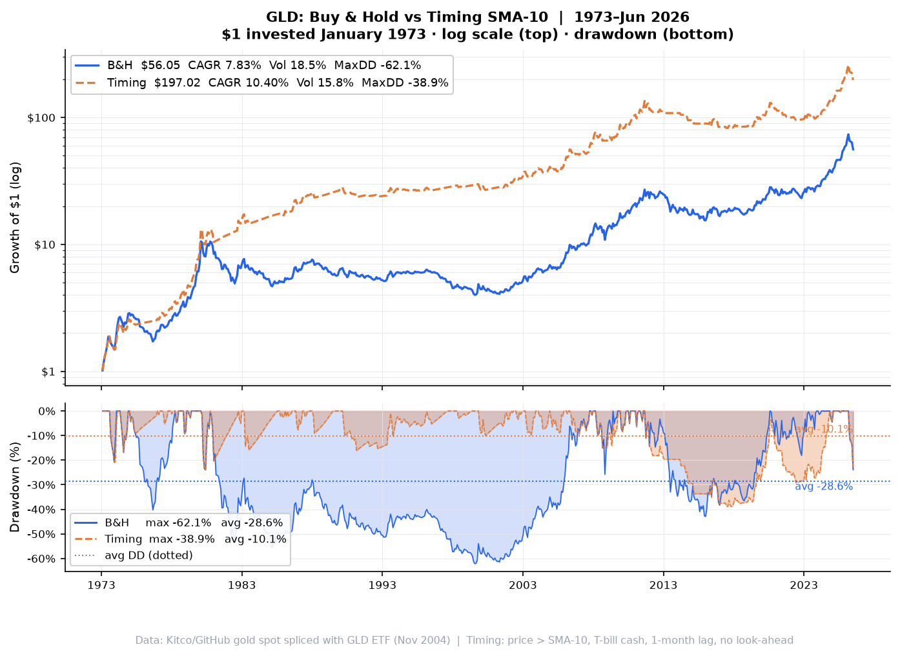
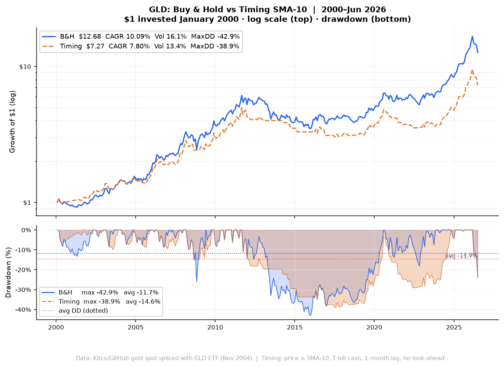

Gold — 53 years of monthly data, 1973–Jun 2026
gld_bh_timing_1973_2026.csv — 642 monthly rows (Jan 1973–Jun 2026) with columns:
price, sma10, signal, monthly_ret_bh, monthly_ret_timing, equity_bh, equity_timing,
drawdown_bh_pct, drawdown_timing_pct
| Strategy | CAGR | Volatility | Sharpe | Max DD | Ulcer Index | $1 → |
|---|---|---|---|---|---|---|
| Buy & Hold | +7.83% | 18.47% | 0.267 | -62.09% | 34.64 | $56.05 |
| Timing SMA-10 (60% invested) | +10.40% | 15.77% | 0.435 | -38.88% | 14.78 | $197.02 |
| Strategy | CAGR | Volatility | Sharpe | Max DD | Ulcer Index | $1 → |
|---|---|---|---|---|---|---|
| Buy & Hold | +10.09% | 16.14% | 0.565 | -42.91% | 17.30 | $12.68 |
| Timing SMA-10 (71% invested) | +7.80% | 13.40% | 0.492 | -38.88% | 19.45 | $7.27 |
$1 invested January 1973 · log scale (top) · drawdown (bottom) · B&H $56.05 | Timing $197.02

$1 invested January 2000 · log scale (top) · drawdown (bottom) · B&H $12.68 | Timing $7.27

Timing rule: At each month-end compare price to 10-month SMA. Price > SMA → invested in GLD. Price ≤ SMA → exit to T-bills. Signal at close of t−1, applied to return of month t (1-month lag).
SMA warm-up: Full 1963–1972 prices used to seed the SMA. First signal = Jan 1973. No look-ahead bias.
Base date: For a period starting Jan YYYY, $1 is invested at Dec (YYYY−1) close.
pct_change() is called on the full price series; the return series is then trimmed to the window start,
so the first month’s return is never lost.
Gold price series: Monthly spot price from GitHub datasets/gold-prices (original source: World Gold Council / LBMA). Pre-1971 data reflects the Bretton Woods fixed peg ($35/oz); free-float begins Aug 1971. Backtest uses 1973+ only. GLD ETF (adjusted close) takes over from Nov 2004 at the splice point.
Cash: FRED TB3MS 3-month T-bill (1934–). Spliced with BIL ETF from 2007.
No costs, taxes or leverage.